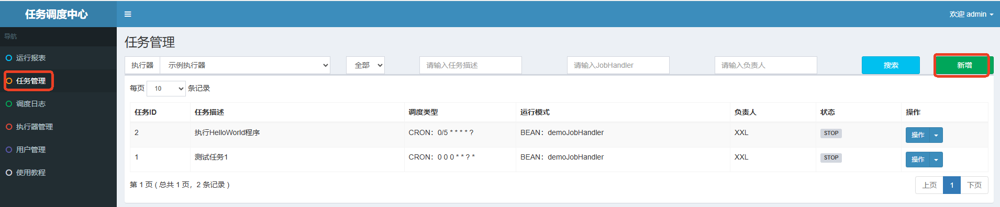
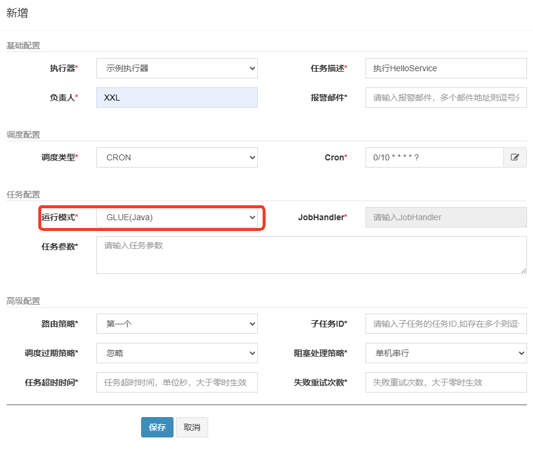
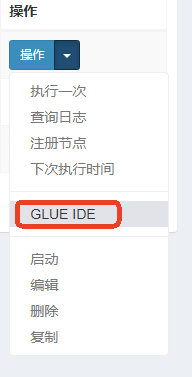
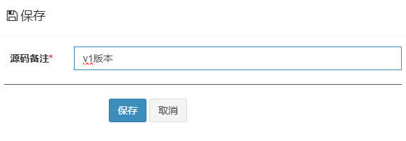
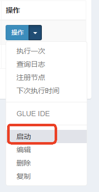
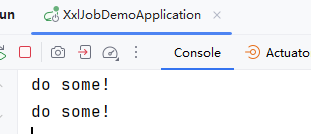
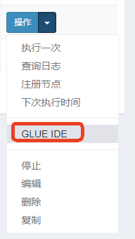
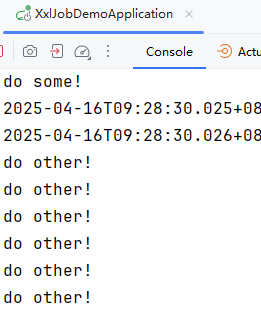

@XxlJob了。GLUE模式可以达到的效果是：采用在线编写代码的方式，在不需要重启服务器的前提下，动态添加/变更执行的任务。
在执行器项目中添加如下类和方法：
@Service
public class HelloService {
public void doSome(){
System.out.println("do some!");
}
public void doOther(){
System.out.println("do other!");
}
}
重启服务器，让以上添加的代码生效。这一点岂不是和我们上面所描述的“不需要重启服务器”不一致了？这其实说的并不是一码事！！！！！服务器端的代码添加了/修改了，是一定要重启服务器的，不重新编译、发布，代码怎么可能生效呢。我们上面所说的“不需要重启服务器”指的是，在调度中心修改具体的任务的代码是不需要重启服务器的！！！
在调度中心中在线编写代码，动态添加任务，并且不需要重启服务器：
新增任务：

运行模式选择：GLUE(Java)

使用GLUE IDE编写Java代码：

编写代码，导入Autowired和HelloService
package com.xxl.job.service.handler;
import com.xxl.job.core.context.XxlJobHelper;
import com.xxl.job.core.handler.IJobHandler;
import org.springframework.beans.factory.annotation.Autowired;
import com.example.demo.job.HelloService;
public class DemoGlueJobHandler extends IJobHandler {
@Autowired
private HelloService helloService;
@Override
public void execute() throws Exception {
helloService.doSome();
}
}
保存/发布：

开启任务：


再次修改代码，不需要停止任务，不需要重启服务器：

package com.xxl.job.service.handler;
import com.xxl.job.core.context.XxlJobHelper;
import com.xxl.job.core.handler.IJobHandler;
import org.springframework.beans.factory.annotation.Autowired;
import com.example.demo.job.HelloService;
public class DemoGlueJobHandler extends IJobHandler {
@Autowired
private HelloService helloService;
@Override
public void execute() throws Exception {
helloService.doOther();
}
}
保存/发布，查看控制台：

通过以上的测试可以看出，当我们使用XXL-JOB的时候，任务修改不需要重启服务器。